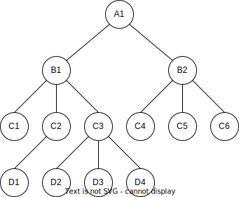

Licenca
To delo je na voljo pod pogoji slovenske licence Creative Commons 2.5:
priznanje avtorstva - nekomercialno - deljenje pod enakimi pogoji.
Celotna licenca je na voljo na spletu na naslovu http://creativecommons.org/licenses/by-nc-sa/2.5/si/. V skladu s to licenco je dovoljeno vsakemu uporabniku delo razmnoževati, distribuirati, javno priobčevati, dajati v najem in tudi predelovati, vendar samo v nekomercialne namene in ob pogoju, da navede avtorja oziroma avtorje in izdajatelja tega dela. Če uporabnik delo predela, kar pomeni, da ga spremeni, preoblikuje, prevede ali uporabi to delo v svojem delu, lahko predelavo dela ponudi na voljo le pod pogoji, ki so enaki pogojem iz te licence oziroma pod enako licenco.

Čeprav ta model predstavlja velik napredek v primerjavi z nepovezanimi datotekami še vedno vsebuje precej velike slabosti. Model sicer zelo dobro predstavlja razmerja ena-v-mnogo (ang. one-to-many) – en starš ima več otrok, na primer ena poslovalnica podjetja ima več zaposlenih – težave pa ima pri predstavitvi razmerij mnogo-v-mnogo (ang. many-to-many). Takšna razmerja kot na primer med izdelki in naročili je v hierarhičnem modelu težko izvesti, saj lahko naročilo vsebuje več izdelkov, izdelek pa se lahko pojavi v več naročilih.
Hierarhični model ni prilagodljiv, saj lahko dodajanje novega razmerja oziroma relacije pomeni spremembo celotne obstoječe strukture. To posledično pomeni tudi, da moramo spremeniti tudi vse obstoječe programe, ki uporabljajo to strukturo.
Tudi razvoj programov je zapleten, saj mora programer dobro poznati podatkovno strukturo, da lahko dostopa do potrebnih podatkov znotraj modela. Kot smo videli v uvodu, moramo za dostop do podatkov v povezanih tabelah poznati le ustrezna polja, preko katerih so podatki povezani. V hierarhičnem modelu pa moramo poznati celotno pot med povezanima podatkoma. Če želimo na primer povezati podatka A1 in D4 moramo poznati celotno pot: od A1 preko B1 in C3 do D4.

Mrežni podatkovni model
Mrežni podatkovni model (ang. Network database model) je izboljšava hierarhičnega modela in skuša odpraviti težave hierrhičnega modela, še posebej pomanjkanje prilagodljivosti. Ta model dovoljuje, da ima vsak otrok lahko več staršev namesto le enega. Otroci v tem modelu so člani (ang. members), starši pa lastniki (ang. owners). Mrežni model s tem naslavlja potrebo po modeliranju zahtevnejših razmerij, kot je na primer razmerje med naročili in izdelki, ki smo ga omenili malo prej.
Kot lahko vidimo na spodnji sliki ima A1 dva člana, B1 in B2. B1 je lastnik C1, C2, C3 in C4. Vendar ima v tem modelu C4 dva lastnika. To sta B1 in B2.
Tudi ta model ima težave, sicer bi ga še vedno množično uporabljali. Njegova izvedba in vzdrževanje sta težja. Čeprav je prilagodljivejši od hierarhičnega modela, ima še vedno določene težave s prilagodljivostjo. Vseh razmerij namreč ne moremo poustvariti samo tako, da dodamo novega lastnika. Da je model uporaben mora programer še vedno zelo dobro poznati in razumeti podatkovno strukturo.